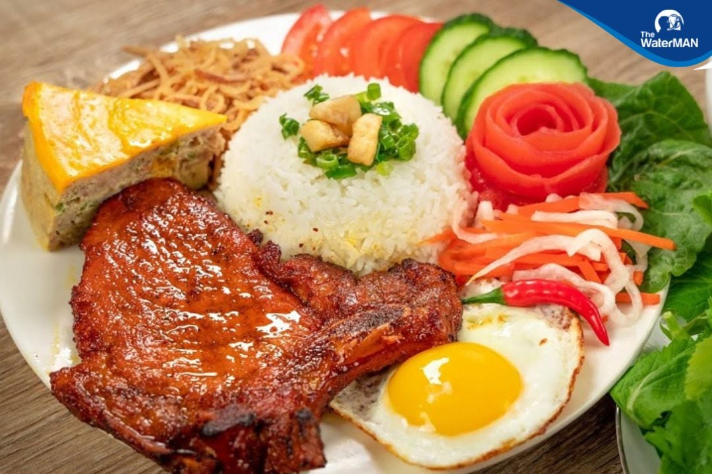

Com tam - The ideal breakfast

Description
Com tam, or broken rice, is a traditional Vietnamese dish made with fractured rice grains, often served with grilled pork, pickled vegetables, and a fried egg.
It is a popular breakfast option in Vietnam, known for its comforting and hearty flavors.
Ingredients
- Broken rice
- Grilled pork (such as pork chop or shredded pork)
- Fried egg
- Pickled vegetables (carrots and daikon radish)
- Fresh herbs (cucumber, lettuce, cilantro)
- Soy sauce or fish sauce for seasoning
Steps
- Rinse the broken rice under cold water until the water runs clear, then soak for 30 minutes.
- Cook the soaked rice in a rice cooker or on the stovetop until tender and fluffy.
- Grill the pork until cooked through and slightly charred, then slice thinly.
- Fry an egg sunny-side up or to your preference.
- Prepare pickled vegetables by soaking julienned carrots and daikon radish in vinegar, sugar, and salt for at least 30 minutes.
- Assemble the dish by placing a portion of broken rice on a plate, topping it with grilled pork, fried egg, pickled vegetables, and fresh herbs.
- Drizzle with soy sauce or fish sauce before serving.
Go to Homepage